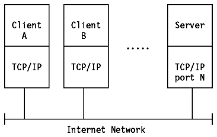

Table of Contents
Table of Contents  Application
Protocols
Application
ProtocolsTable of Contents Application
Protocols
All of the higher-level protocols have some characteristics in common:
TCP is a peer-to-peer, connection-oriented protocol. There are no master/slave relations. The applications, however, use a client/server model for communications.
A server is an application that offers a service to internet users; a client is a requester of a service. An application consists of both a server and a client part, which can run on the same or on different systems.
Users usually invoke the client part of the application, which builds a request for a particular service and sends it to the server part of the application using TCP/IP as a transport vehicle.
The server is a program that receives a request, performs the required
service and sends back the results in a reply. A server can usually deal
with multiple requests (multiple clients) at the same time.

Figure: The Client/Server Model of Applications
Some servers wait for requests at a well-known port so that their clients know to which IP socket they must direct their requests. The client uses an arbitrary port for its communication. Clients that wish to communicate with a server that does not use a well-known port must have another mechanism for learning to which port they must address their requests. This mechanism might employ a registration service such as Portmap, which uses a well-known port.
The next sections discuss the most widely used application protocols.
 TELNET
TELNET